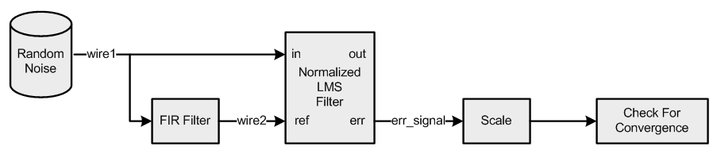

Signal Convergence Example
- group SignalConvergence
Refer riscv_signal_converge_example_f32.c
- Description:
Demonstrates the ability of an adaptive filter to “learn” the transfer function of a FIR lowpass filter using the Normalized LMS Filter, Finite Impulse Response (FIR) Filter, and Basic Math Functions.
- Algorithm:
The figure below illustrates the signal flow in this example. Uniformly distributed white noise is passed through an FIR lowpass filter. The output of the FIR filter serves as the reference input of the adaptive filter (normalized LMS filter). The white noise is input to the adaptive filter. The adaptive filter learns the transfer function of the FIR filter. The filter outputs two signals: (1) the output of the internal adaptive FIR filter, and (2) the error signal which is the difference between the adaptive filter and the reference output of the FIR filter. Over time as the adaptive filter learns the transfer function of the FIR filter, the first output approaches the reference output of the FIR filter, and the error signal approaches zero.
The adaptive filter converges properly even if the input signal has a large dynamic range (i.e., varies from small to large values). The coefficients of the adaptive filter are initially zero, and then converge over 1536 samples. The internal function test_signal_converge() implements the stopping condition. The function checks if all of the values of the error signal have a magnitude below a threshold DELTA.
- Block Diagram:

- Variables Description:
testInput_f32points to the input datafirStateF32points to FIR state bufferlmsStateF32points to Normalised Least mean square FIR filter state bufferFIRCoeff_f32points to coefficient bufferlmsNormCoeff_f32points to Normalised Least mean square FIR filter coefficient bufferwire1, wir2, wire3 temporary bufferserrOutput, err_signal temporary error buffers
- NMSIS DSP Software Library Functions Used:
riscv_lms_norm_init_f32()
riscv_fir_init_f32()
riscv_fir_f32()
riscv_lms_norm_f32()
riscv_scale_f32()
riscv_abs_f32()
riscv_sub_f32()
riscv_min_f32()
riscv_copy_f32()